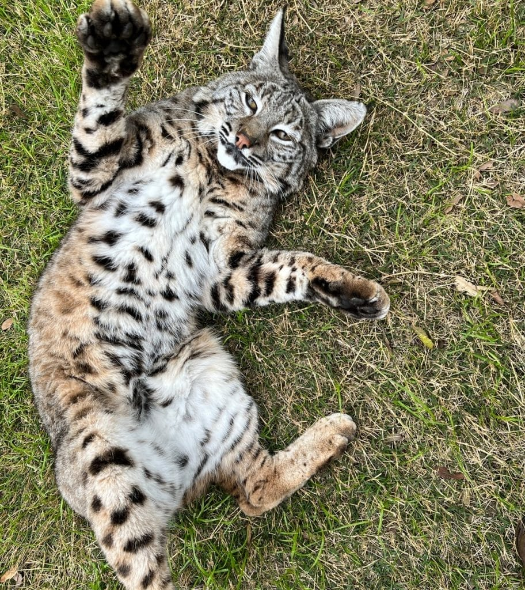

About Bobcats
Bobcats are wild cats that are native to North America. They are known for their spotted fur, short tails, and excellent hunting skills. Bobcats can live in forests, deserts, mountains, and even areas close to cities.
Bobcats are mostly active during the evening and at night. They are very good at hiding and usually avoid humans. These animals are important to their ecosystems because they help control populations of smaller animals such as rabbits and rodents.


Bobcat Facts
| Fact | Information | Details |
|---|---|---|
| Scientific Name | Lynx rufus | A species of wild cat |
| Habitat | North America | Forests, deserts, and mountains |
| Diet | Carnivore | Rabbits, rodents, birds, and other small animals |
| Size | About 2–3 feet long | Usually smaller than a mountain lion |
| Special Feature | Short tail | Often has a black-tipped tail |